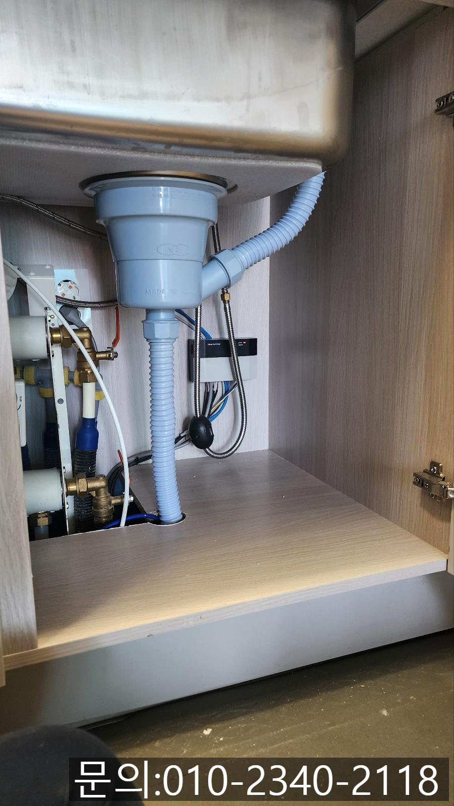
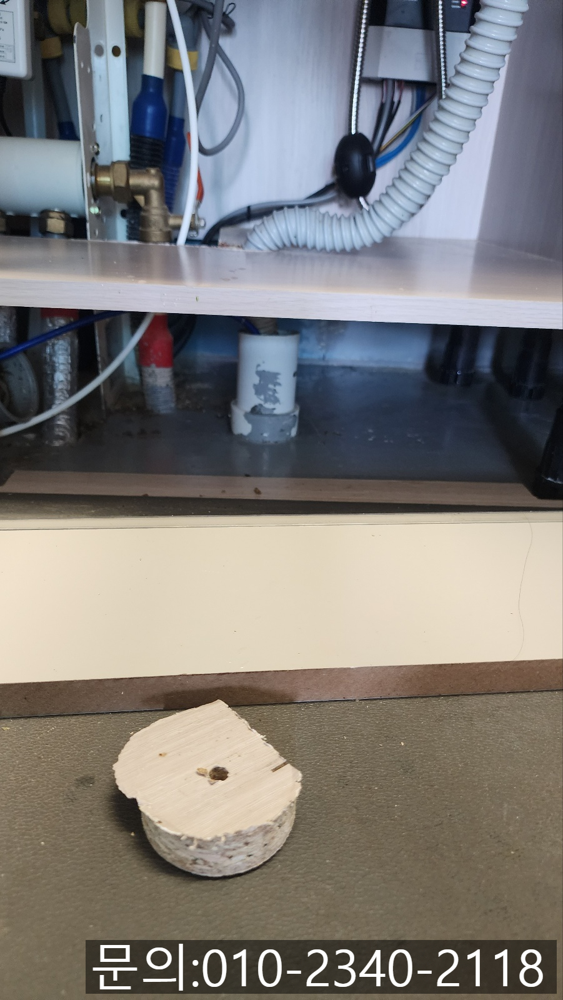
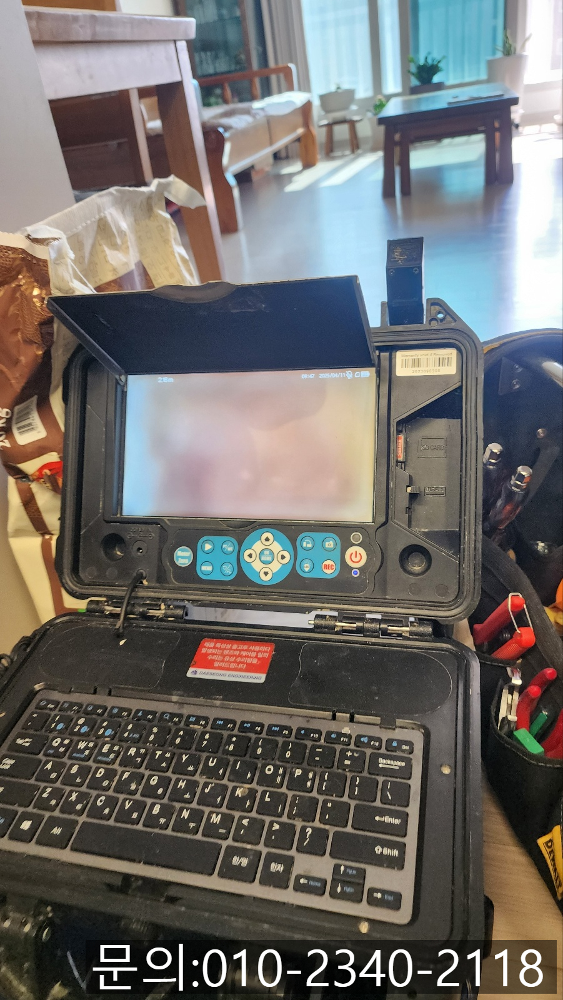
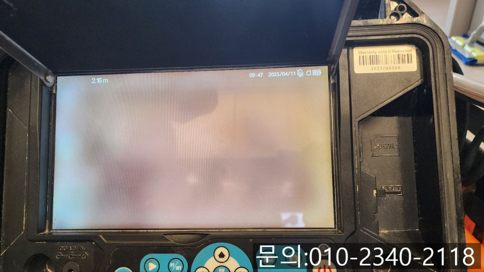
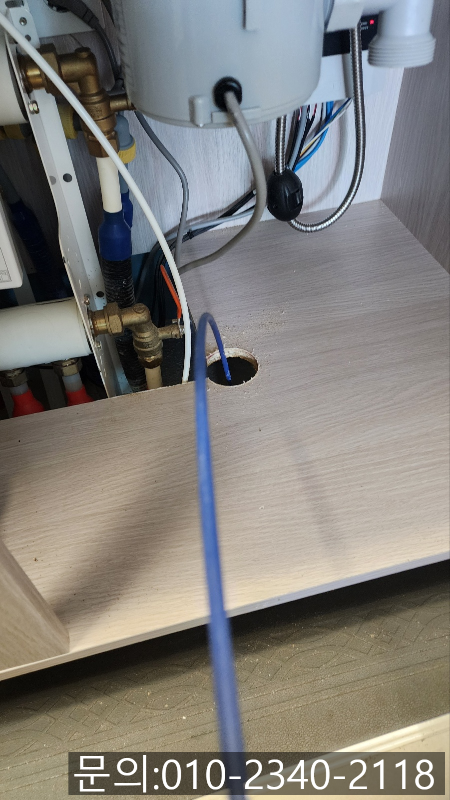

🏠 야탑동 싱크대 막힘 성남 판교동 하수구 역류 뚫는 방법
성남 야탑동 싱크대막힘 전문 시공 후기

📋 작업 개요
- 위치: 성남 야탑동, 야탑동, 성남
- 서비스 유형: 싱크대막힘, 하수구막힘, 배관막힘, 역류해결, 뚫는업체, 배관청소, 고압세척
- 작업 일시: 2025. 8. 27. 13:40
- 업체명: 하수구수사대 (010-5615-2118)
🔍 문제 상황
안녕하세요.
분당동 싱크대 막힘, 성남 야탑동 하수구 배관 역류, 넘침 뚫어주는 업체 하수구 다큐입니다.
분당동 싱크대 막힘으로 고민이 많으신가요?
주방을 사용하면서 깨끗하게 청소하고 관리해도 막히게 되는 싱크대!
사용한 물이 빠져나가는 속도가 느려지고, 거꾸로 역류하게 되면 당황스러울 수밖에 없습니다.
막힌 배관을 전문적인 장비 없이 뚫는 것은 거의 불가능하지만 평소에 신경 써서 관리하신다면 분당동 싱크대 막힘을 늦출 수는 있겠죠?
오늘은 분당동 싱크대 막힘을 늦출 수 있는 방법과 성남 야탑동 하수구 배관 역류 넘침 뚫어주는 업체 하수구 다큐가 직접 방문해서 해결해 드리고 온 현장을 소개해 드릴게요.
싱크대 막힘을 예방하는 방법

🔎 원인 분석
💡 전문가 진단: 정밀 진단 장비를 사용하여 슬러지의 고착 여부를 판명하고 타격/세척 작업을 실시했습니다.
음식물 찌꺼기를 배수구로 바로 버리면 막힘의 주범이 되므로 거름망을 설치해 주셔야 합니다.
기름 성분이 배관으로 흘러들어가게 되면 굳어서 배관을 막게 되므로 기름기 있는 음식은 키친타월로 닦아 낸 후 따뜻한 물로 세척해 주셔야 합니다.
주 1회 정도 뜨거운 물을 배관에 부으면 눌어붙은 기름 성분들이 부드러워져 씻겨 내려갈 수 있어요. 단, 끓는 물의 경우 플라스틱 배관에 손상을 줄 수 있으니 식혀서 부어주셔야 합니다.
베이킹소다 반컵, 식초 반컵 순으로 배수구에 붓고 10분에서 15분 뒤 뜨거운 물로 헹궈 주시면 기름기나 음식물 찌꺼기를 분해하는데 효과적입니다.
가정에서 배관을 관리하는 방법에 대해 간단하게 알아봤는데요.
어렵지 않은 방법이니 기억해 두셨다가 실천해 보시면 싱크대 막힘을 늦출 수 있을 것 같습니다.
이번엔 성남 야탑동 하수구 배관 역류, 넘침 뚫어주는 업체 하수구 다큐가 연락을 받고 다녀온 현장을 소개해 드릴게요.
식사를 마치고 식기를 정리하는 데 사용한 물이 흘러내려 가지 않는다고 연락을 주셨습니다.

🔧 작업 과정
주말이라 온 가족이 함께 식사를 하셔서, 주방 정리해야 저녁도 준비할 텐데 배관 막힘으로 인해 불편하실 고객님을 위해 필요한 장비를 챙겨 신속하게 현장으로 출동했어요.
감사하게도 사용하셨던 그릇들은 화장실에서 세척하시고 하수구 다큐가 작업하기 편하도록 정리를 해놓으셨더라고요.
고객님의 배려로 현장에 도착하자마자 내시경 카메라를 이용해 배관 역류의 원인을 파악해 보기로 했습니다.
내시경 카메라가 배관 내부로 진입하니 기름 슬러지로 인해 꽉 막혀있는 상태였어요.
고객님께서도 깜짝 놀라실 만큼 많은 양의 기름 슬러지가 배관을 가득 채우고 있는 상태이다 보니 이대로 방치했다가는 더 큰 문제로 이어질 수 있어 배관 청소를 진행하기로 했습니다.
고객님께 배관 청소하는 방법과 발생되는 비용, 소요 시간 등 자세히 안내해 드리고 작업을 시작했어요.
플렉스 샤프트 장비를 진입시켜 배관에 쌓인 이물질을 제거하는데 평소와 다른 느낌이 손끝으로 느껴집니다.
장비가 제대로 진입하지 못하는 것을 느낀 하수구 다큐는 관리사무소의 도움을 받아 지하실로 내려가 반대편 배관에서 구조를 확인해 보기로 했어요.
이번 현장이 아파트 1층이다 보니 지하로 내려가 싱크대 반대쪽 배관을 찾아보니 예상했던 대로 펴 트랩이었습니다.
피트랩은 하수구에 물이 고여있을 자리가 있어 냄새나 유해가스가 올라오지 않도록 막아주는 역할은 하는데요.
그러다 보니 장비의 진입이 어려운 단점이 있습니다.
지하실에 위치하고 있는 배관에서 내시경 카메라를 진입시켜보니 기름 슬러지로 막혀있는 것을 확인할 수 있었어요.
플렉스 샤프트 장비를 사용해 기름 슬러지를 제거하는 작업을 반복해서 진행해 드렸습니다.

✅ 작업 완료
한참을 반복해서 플렉스 샤프트로 이물질을 제거하자 새것처럼 깨끗해진 배관을 확인할 수 있었습니다.
같은 싱크대 막힘 현장이더라도 배관의 구조에 따라 작업하는 방법이 달라질 수밖에 없습니다.
지금 하수구 막힘으로 고민하고 계신다면 다양한 현장 경험을 바탕으로 작업을 진행해 드리는 하수구 다큐와 함께 해결해 보세요.
경기도 용인시 처인구 중부대로1313번길 20-25 2층 202호 나21




⚠️ 주방 싱크대 배관 막힘 예방 수칙
- ✅ 기름기가 묻은 식기나 프라이팬은 설거지 전 키친타올로 반드시 기름때를 닦아내세요.
- ✅ 주기적으로 싱크대 개수대에 뜨거운 물을 가득 받아 한 번에 내려 배관 내부 기름을 씻어내세요.
- ✅ 배수구 거름망을 미세한 필터로 사용하시고 음식물 찌꺼기가 틈으로 새어 들지 않게 관리하세요.
- ✅ 베이킹소다와 식초를 뜨거운 물과 함께 일주일에 한 번씩 부어주면 배관 살균과 막힘 예방에 좋습니다.
💡 핵심 정리
- 확실한 장비 작업(내시경 점검 및 샤프트 스케일링)으로 원인을 뿌리 뽑습니다.
- 작업 후 1년 이내에 동일한 부위 재발 시 100% 무상 A/S 서비스를 보장합니다.
- 서울 · 경기 · 인천 전 지역에 24시간 언제든 긴급 출동할 수 있도록 항시 대기 중입니다.
❓ 자주 묻는 질문 (FAQ)
🚨 성남 야탑동 싱크대막힘 문제로 고민이신가요?
정확한 원인 진단과 확실한 시공으로 재발 없는 해결을 약속드립니다.
24시간 긴급 출동 | 서울 · 경기 · 인천 전지역 | 1년 내 재발 시 무상 A/S